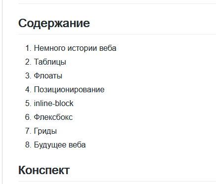

Конспект лекции
Презентация

Это лекция про то, как веб сайты верстали раньше и почему больше не стоит так делать. А также про то, как их верстают сейчас и в чем преимущество современных методов.
Это полезно знать, потому что можно встретить устаревший код в реальных проектах и при поиске информации на просторах сети.
После небольшого экскурса в историю веба, я рассказываю про таблицы, флоаты и inline-block и объясняю их недостатки. После этого рассматриваются флексбокс и гриды с их преимуществами и недостатками.
На лекции используются несколько слайдов в начале. Большая часть занятия - живой код. Я показываю реализацию классического двухколоночного дизайна на разных раскладках, чтобы было легче понять отличия и плюсы/минусы каждой.
Записаться на лекцию можно на отдельной странице